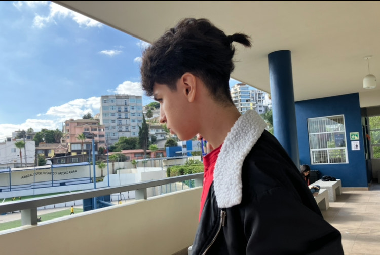
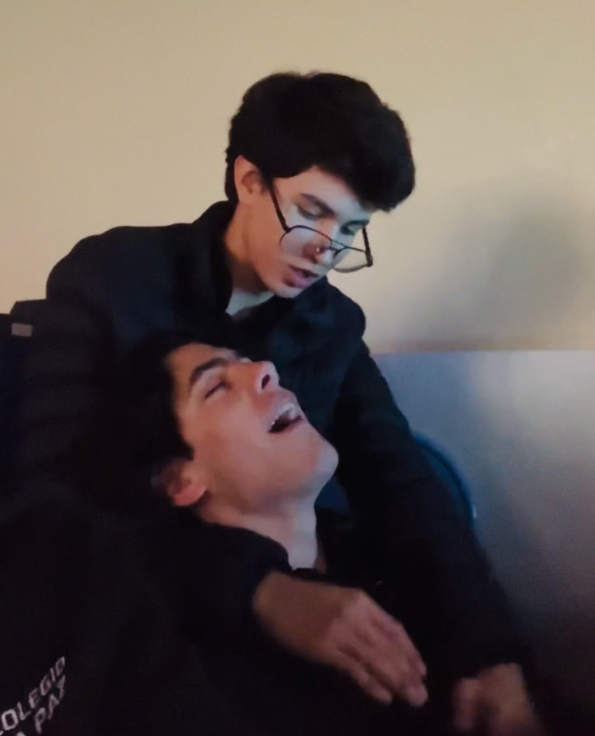

Angel Alfonso Alcantar
AKA: Kakakon
Edad: 18
Rango: Alpha
Nivel de Poder: 5,000
Ángel, ilustre por haber sido acogido con beneplácito en el prestigioso círculo del 602 y posteriormente alzarse como su preeminente líder, se encuentra enfrascado en una batalla interna marcada por desafíos vinculados a su salud mental, atribulada por una perniciosa adicción a los videojuegos. No obstante las contiendas que enfrenta, imparte al grupo una inquebrantable dosis de determinación y un liderazgo sin par. Su deleite se manifiesta en el disfrute de juegos selectos como Brawl Stars, enriqueciendo su espíritu con un ferviente interés por la cultura popular. No obstante, su trayecto no está exento de sombras, ya que enfrenta igualmente graves desafíos asociados al abuso de caramelos de origen dudoso, una inquietante problemática que sus amigos y camaradas de grupo observan con justificado pesar. 
Ángel ha atravesado una metamorfosis verdaderamente notable en los recientes ciclos argumentales, transitando de una posición periférica a erigirse como el líder indiscutible del grupo, con un enfoque marcadamente antagonista. Su carisma magnético y su astucia sin par lo han catapultado hacia la cúspide, erigiéndose así como uno de los personajes más prominentes en el extenso legado del 602. Aunque sus acciones han suscitado controversias internas, algunos han especulado acerca de su preferencia entre el América y el León, en virtud de sus actitudes ambiguas hacia el género femenino y la frecuencia de sus comportamientos enigmáticos. Sin embargo, estas teorías continúan siendo objeto de encendido debate y especulación en los intrincados corrillos del grupo.
.jpg)
El Guanajuatense sobresale por su imponente liderazgo y una determinación férrea, a pesar de haber enfrentado desafíos pasados relacionados con la equidad y el respeto. Tras compartir abiertamente sus inquietudes con las mujeres del 602, se embarca en una misión dedicada a la resolución de conflictos y la construcción de puentes entre los integrantes del grupo. Investido con su nuevo rol como líder, todas las miradas aguardan expectantes para presenciar cómo afrontará los desafíos remanentes y cómo logrará un desenlace satisfactorio para cada uno de los miembros del equipo.
 602